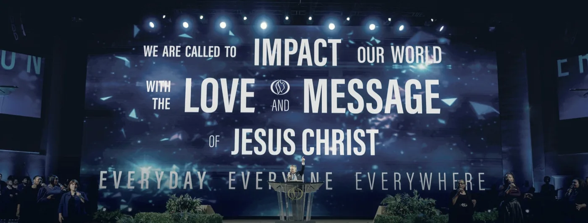
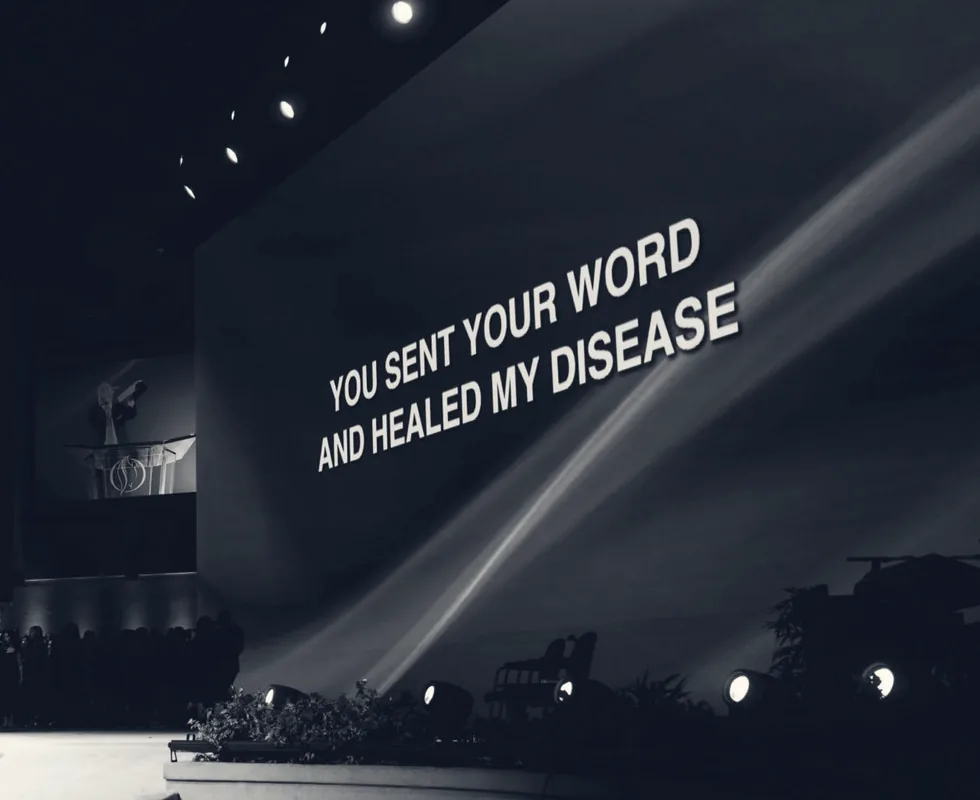
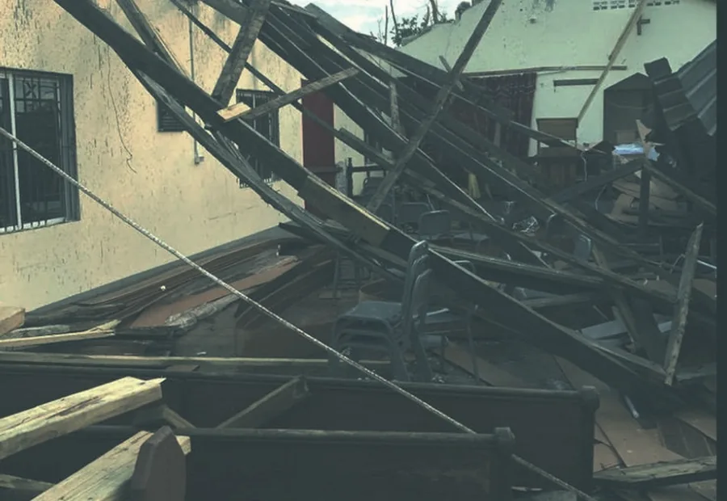

All are welcome
in the house
of God
Canada's first established multicultural, non-denominational church. Sixty years of ministry on Arrow Road, and a door that has never asked where you came from.
Come as
you are
There is no dress code and no form to fill in at the door. Parking is free, security is on the premises, and someone is watching for you. If you are new, meet us at the Welcome Reception in the Connect Cafe straight after the Sunday service, between the north main entrance and the gymnasium.
Nursery care runs from birth to three years in Wing 2. Palace Kidz takes ages four to twelve during the 10:30 service. Youth meet Friday nights at 7:30 in the Wing 1 Chapel. Real-time translation is offered every Sunday, at no cost, in your language.
- 09:45
Connect Class, Wing 2 Chapel. Thirty minutes on who we are and what happens next.
- 10:15
Palace Kidz check-in opens, Wing 1. Ages nought to twelve.
- 10:30
Worship and Word in the main sanctuary. Expect to be there until about 12:30.
- 12:30
Welcome Reception, Connect Cafe. Light refreshments and a welcome package to take home.
Sixty years.
Fifty nations.
One house.
We are a church in the city of Toronto where you and your family can experience an encounter with God and His message of hope and grace. Over fifty nationalities gather in this room as one body.

Pastor Tom Melnichuk is a part of the founding family. For over forty years he ministered alongside his father, the late Reverend Paul Melnichuk, helping to build, strengthen and preserve the foundation of this church's mission. He is also a certified airline transport pilot, which is how our humanitarian relief reaches places that are otherwise hard to get to.
- I
Live life together in unity for Jesus.
- II
Honour yesterday and inspire tomorrow.
- III
Aspire greatness in one another.
- IV
Everyone is called for a purpose.
- V
Kingdom model mindset is about serving and multiplying.
Pray this
prayer today
Lord Jesus, I repent of my sins. I ask You to come into my heart; wash me with Your blood. I confess with my mouth and believe in my heart that You are my Lord and Saviour. You're now more than my God; You're my Heavenly Father and I'm going to serve You all the days of my life. I declare now and forever, Jesus is my Lord. Amen.
The prayer of salvationIf you prayed that, tell someone. Then take the next step: water baptism is an outward expression of an inward change, practised here by immersion. Baptism does not save a person; it is the celebration of a salvation already received.
We also believe in standing with you in prayer. Send us a prayer request or a praise report and we will lift it with the full expectation that the thing you are believing for will come to pass.

Heaven is real.
There is eternal life.
No eye has seen, no ear has heard, and no mind has imagined what God has prepared for those who love him.
1 Corinthians 2:9
A general in the faith
On 31 October 2024 our founder and senior pastor, Paul David Melnichuk, was promoted to glory at the age of ninety, after seventy years in the service of his Lord and Saviour. We mourn, but not as those who have no hope.
He was an unparalleled teacher, a father, and a shepherd to the people. The work of the Lord continues, as Pastor Paul would desire.
"I am the resurrection and the life. He who believes in me will live, even though he dies." John 11:25
Mission: raise the roof
Hurricane Melissa struck Jamaica on 28 October 2025 as a category five storm. In Clarendon it tore the roof clean off a local church, leaving the sanctuary open to the sky. We have committed to rebuilding it, and to reinforcing it against the next one.
